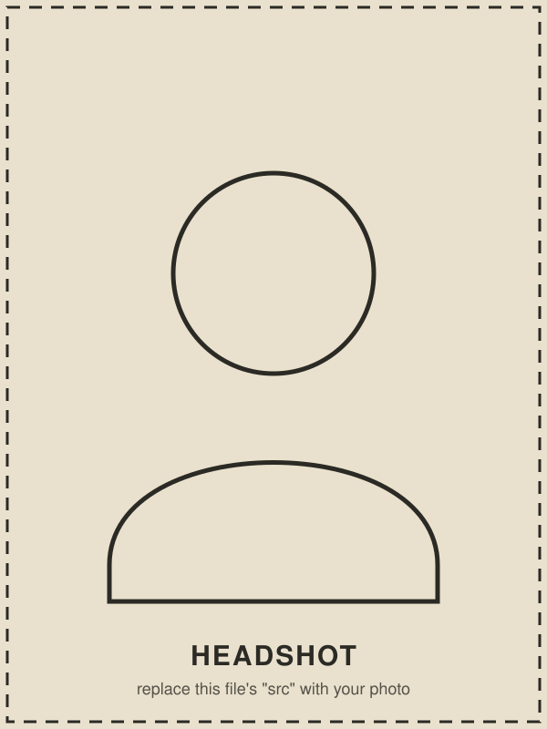

Who I Am
I grew up on the Massachusetts coast, and somewhere between saltwater and snowmelt I became a mountain person. I'm now a Master's student in Mechanical Engineering at the University of Colorado Boulder, building on a B.S. in Integrated Design Engineering and a certificate in Executive Engineering Leadership.
For nearly three years I've worked as a Systems Engineering Intern at HNTB, developing rail transit models, managing CAD deliverables, and supporting proposal strategy on multi-million dollar transportation infrastructure projects. My Integrated Design Engineering background — built around collaboration, human-centered design, and iterative problem solving — is what I bring to every group project, and paired with my leadership training, it's made me just as comfortable running the room as grinding through the details.
Outside of work you'll find me skiing, hiking through national parks, surfing when I can get back to the coast, or working with my hands — woodworking, quilting, cooking. The outdoors, and the parks in particular, are a big part of why this site looks the way it does.